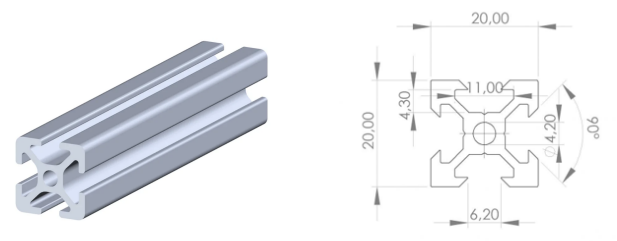
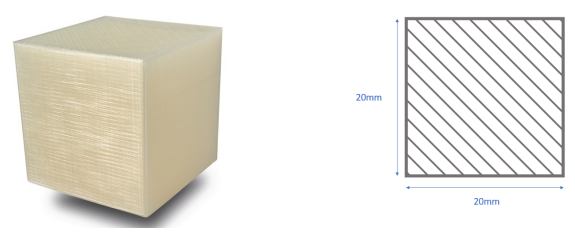

Mécatronique · ICAM Grand Paris Sud · 2025–2026
Étude complète du cycle de vie du Bras de Fer — de la conception à la fin de vie, évaluation mécanique, écologique et opérationnelle.
Le projet « Le Bras de Fer » est un bras robot à 5 axes conçu pour des entreprises de jouets dont les produits sont des cubes. Sa mission est de trier automatiquement ces cubes selon leur couleur (rouge, bleu, vert) et de constituer des assortiments de 3 cubes conformément aux consignes de l'opérateur.
Bien qu'il dispose de 5 liaisons pivot motorisées, l'espace de travail ciblé se déploie selon les 3 axes de l'espace.
L'entreprise cherche à automatiser une tâche répétitive de tri et d'assemblage sur une chaîne de production. Le robot saisit un cube arrivant par convoyeur, identifie sa couleur, le dépose dans la zone de stockage correspondante, puis compose des assortiments dans une boîte amenée par un second convoyeur.
⚠ Le projet ne comprend pas la fabrication des convoyeurs eux-mêmes.
La partie mécanique est l'ossature du système. Elle supporte et positionne les 6 servomoteurs, guide les mouvements dans les 3 dimensions, maintient le capteur de couleur face aux cubes et permet à la pince d'exercer la force de préhension nécessaire. Un défaut mécanique (flexion, jeu, désalignement) se traduit directement par une erreur de positionnement de l'effecteur.
SOUS-SYSTÈMES PRINCIPAUX
Mécanique. Structure en profilés aluminium 6061-T6 (20×20 mm) et pièces PLA imprimées en 3D. 5 axes rotatifs, pince en cours d'assemblage.
Actionneurs. 5 servomoteurs SCS15 pour les axes principaux, 1 servomoteur HS-422 pour la pince.
Capteurs / Perception. Capteur de couleur TCS34725 intégré à l'effecteur pour l'identification des cubes.
Commande & Informatique. Arduino MEGA 2560 (servomoteurs), Raspberry Pi 5 (traitement haut niveau, URDF/ROS), alimentation AC/DC 12V 10A.
Six solides articulés, deux matériaux complémentaires, une philosophie de conception modulaire.
DÉCOMPOSITION EN 6 SOLIDES
Base fixe — Structure en profilés aluminium 6061-T6, ancrée sur le plan de travail. Un servomoteur SCS15 entraîne la base rotative via un système de courroie.
Base rotative — Pivot d'axe vertical sur la base fixe, entraîné par courroie depuis le SCS15 pour réduire la charge supportée. Relié au solide 2 par un autre SCS15 d'axe horizontal (pivot A).
Segments du bras — Deux profilés aluminium 20×20 mm de 15 cm chacun, reliés par les moteurs SCS15 en pivots B et C.
Poignet — Dernier moteur SCS15, pivot D, supportant la pince.
Pince (en cours) — Mors, rail linéaire et support imprimés en PLA, entraînés par le servomoteur HS-422.

Utilisé pour les segments rectilignes (bras 2, bras 3) et la base fixe. Profilés V-slot 20×20 mm avec fente 6 mm. Recyclable et réutilisable.

Utilisé pour toutes les pièces de forme complexe (corps de pivot, supports, pièces de pince). Impression FDM, section 20×20 mm plein à 100 % pour les calculs.
Toutes les liaisons entre solides sont des liaisons pivot (rotations simples), réalisées par les moteurs SCS15. Fixation sur profilés alu par vis M6. Assemblage via rainures en T et équerres.
Pièces PLA par impression FDM. Profilés aluminium découpés à 15 cm puis taraudés M6. Aucun usinage complexe — compatible avec les ressources disponibles à l'ICAM.
Les rainures des profilés alu servent de chemin de câblage naturel. Capteur TCS34725 fixé à l'extrémité du bras. Arduino et Raspberry Pi sur un panneau électrique distinct de la base.
Pour chaque phase : choix & justifications, avantages, limites & risques, et pistes d'amélioration.
Sélection des matériaux par méthode Granta EduPack, analyse cinématique complète, dimensionnement des sections.
Combinaison PLA / aluminium issue d'une étude comparative (Granta EduPack). Critères retenus : limite élastique > 35 MPa, masse volumique < 2 000 kg/m³, facilité de mise en œuvre et impact environnemental.
⚠ Calculs réalisés avec section PLA plein à 100 % de remplissage, ce qui surestime la rigidité réelle.
→ Réduire de 5 cm les sections 2 et 3. Adopter une hypothèse de remplissage à ~60–80 % pour les calculs.
Sélection des matériaux par méthode Granta EduPack, analyse cinématique complète, dimensionnement des sections.
Combinaison PLA / aluminium issue d'une étude comparative (Granta EduPack). Critères retenus : limite élastique > 35 MPa, masse volumique < 2 000 kg/m³, facilité de mise en œuvre et impact environnemental. Aluminium pour les segments rectilignes, PLA pour les pièces complexes.
⚠ Calculs réalisés avec section PLA plein à 100 % de remplissage, ce qui surestime la rigidité réelle (anisotropie des couches, porosité).
→ Réduire de 5 cm les sections 2 et 3 pour réduire le bras de levier. Adopter une hypothèse de remplissage à ~60–80 % pour les calculs.
Impression 3D FDM pour le PLA, découpe et taraudage pour les profilés alu — deux procédés accessibles à l'ICAM.
La fabrication repose sur l'impression 3D pour le PLA et sur la découpe + taraudage pour les profilés alu. Cette approche minimise les coûts et les délais tout en permettant des itérations rapides de conception.
⚠ L'orientation d'impression influe fortement sur la résistance. Tolérances dimensionnelles de ±0,2 à 0,5 mm pouvant rendre l'ajustement entre pièces délicat.
→ Définir une charte d'orientation d'impression pour chaque pièce. Tester les ajustements sur des pièces de test avant impression définitive.
Impression 3D FDM pour le PLA, découpe et taraudage pour les profilés alu — deux procédés accessibles à l'ICAM.
La fabrication repose sur l'impression 3D pour le PLA et sur la découpe + taraudage pour les profilés alu. Cette approche minimise les coûts et les délais tout en permettant des itérations rapides de conception.
⚠ L'orientation d'impression influe fortement sur la résistance. Tolérances dimensionnelles de ±0,2 à 0,5 mm pouvant rendre l'ajustement délicat.
→ Définir une charte d'orientation d'impression. Tester les ajustements sur des pièces de test avant impression définitive.
Vis M6 robustes et démontables, rainures en T des profilés V-slot pour positionnement libre sans perçage préalable.
Assemblage via vis M6 (robuste, démontable). Les rainures en T des profilés V-slot permettent un positionnement libre des équerres et des supports sans perçage préalable.
⚠ Cohabitation de 5 SCS15 + HS-422 + Raspberry Pi 5 + Arduino : volume de câblage important. Accès aux vis M6 sous les servos une fois montés potentiellement difficile.
→ Numéroter les câbles, utiliser des attaches-câbles fixés dans les rainures alu. Prévoir un câblage organisé entre structure mécanique et panneau électrique.
Vis M6 robustes et démontables, rainures en T des profilés V-slot pour positionnement libre sans perçage préalable.
Assemblage via vis M6 (robuste, démontable). Les rainures en T des profilés V-slot permettent un positionnement libre des équerres et des supports sans perçage préalable.
⚠ Cohabitation de 5 SCS15 + HS-422 + Raspberry Pi 5 + Arduino : volume de câblage important. Accès aux vis M6 sous les servos difficile une fois montés.
→ Numéroter les câbles, utiliser des attaches-câbles fixés dans les rainures alu. Organiser le câblage entre structure mécanique et panneau électrique.
Manipulation de cubes en bois légers, contrainte max. 31,6 MPa pour le PLA et 54,4 MPa pour l'alu — en dessous des limites élastiques.
Bras dimensionné pour manipuler des cubes en bois légers (pince + charge ≈ 1 kg total). L'étude en flexion confirme une contrainte maximale de 31,6 MPa pour le PLA et 54,4 MPa pour l'aluminium — dans les deux cas inférieures aux limites élastiques.
⚠ PLA sensible à la chaleur (Tg ~60°C) — risque de ramollissement en atelier chaud. Vibrations aux pivots B et C lors de mouvements rapides. Pince non encore assemblée.
→ Ajouter ventilations ou écrans thermiques entre servos et pièces PLA. Implémenter des profils de vitesse rampe dans le code. Tester la répétabilité une fois la pince assemblée.
Manipulation de cubes en bois légers, contrainte max. 31,6 MPa pour le PLA et 54,4 MPa pour l'alu — en dessous des limites élastiques.
Bras dimensionné pour manipuler des cubes en bois légers (pince + charge ≈ 1 kg total). Contrainte maximale de 31,6 MPa pour le PLA et 54,4 MPa pour l'aluminium — inférieures aux limites élastiques.
⚠ PLA sensible à la chaleur (Tg ~60°C). Vibrations aux pivots B et C lors de mouvements rapides. Pince non encore assemblée.
→ Ajouter des écrans thermiques entre servos et pièces PLA. Implémenter des profils de vitesse rampe. Tester la répétabilité une fois la pince assemblée.
Structure modulaire conçue pour permettre le remplacement des composants individuellement sans démonter l'ensemble du bras.
Structure modulaire (profilés V-slot + vis M6 + pièces PLA distinctes) conçue pour faciliter le remplacement des composants individuellement sans démonter l'ensemble du bras.
⚠ Pièces PLA non standard : réimpression nécessaire si casse (plusieurs heures). Sans fin de course ni capteurs d'effort, un servo bloqué peut griller sans alerte.
→ Constituer un stock de pièces PLA de rechange. Ajouter une surveillance logicielle du courant par servo. Documenter précisément le schéma de câblage avec numérotation des connecteurs.
Structure modulaire conçue pour permettre le remplacement des composants individuellement sans démonter l'ensemble du bras.
Structure modulaire (profilés V-slot + vis M6 + pièces PLA distinctes) conçue pour faciliter le remplacement des composants individuellement sans démonter l'ensemble du bras.
⚠ Pièces PLA non standard : réimpression nécessaire si casse. Sans fin de course ni capteurs d'effort, un servo bloqué peut griller sans alerte.
→ Constituer un stock de pièces PLA de rechange. Ajouter une surveillance logicielle du courant par servo. Documenter le schéma de câblage avec numérotation des connecteurs.
Anticipée lors de la sélection des matériaux : l'aluminium 6061-T6 retenu pour sa recyclabilité et sa réutilisabilité pour de futurs projets ICAM.
La fin de vie a été partiellement anticipée : aluminium 6061-T6 retenu pour sa recyclabilité et réutilisabilité d'une année sur l'autre. Le composite époxy/fibre de verre identifié comme solution idéale, non retenu en raison de son coût et de sa difficulté de recyclage.
⚠ PLA non recyclé à l'ICAM et finira à la poubelle. La séparation des matériaux lors du démontage implique un dévisage complet (vis M6) qui peut être long.
→ Marquer les pièces alu pour faciliter tri et réutilisation. Remplacer le PLA par du PETG ou un composite époxy/fibre de verre pour améliorer durabilité et recyclabilité en version de production.
Anticipée lors de la sélection des matériaux : l'aluminium 6061-T6 retenu pour sa recyclabilité et sa réutilisabilité pour de futurs projets ICAM.
Aluminium 6061-T6 retenu pour sa recyclabilité et réutilisabilité. Le composite époxy/fibre de verre identifié comme solution idéale, non retenu en raison de son coût et de sa difficulté de recyclage.
⚠ PLA non recyclé à l'ICAM et finira à la poubelle. Séparation des matériaux impliquant un dévisage complet et long.
→ Marquer les pièces alu pour faciliter tri et réutilisation. Remplacer le PLA par du PETG ou un composite époxy/fibre de verre en version de production.
Cliquez sur une phase pour afficher son bilan.
L'analyse du cycle de vie du Bras de Fer met en évidence une conception globalement cohérente avec l'ensemble des phases de vie du système. Les choix de matériaux (profilés aluminium 6061-T6 pour les segments rectilignes et PLA pour les pièces complexes) sont justifiés par une étude comparative rigoureuse et répondent aux contraintes mécaniques calculées avec des marges de sécurité satisfaisantes.
Les principales forces du projet résident dans sa modularité, sa facilité de fabrication avec les ressources de l'ICAM, et la réutilisabilité des composants alu et électroniques. La documentation technique produite constitue un atout pour la maintenance et les évolutions futures.
Les points de vigilance identifiés sont la gestion thermique du PLA au contact des servos, la structuration du câblage, l'absence de fin de course et la fragilité potentielle des pièces PLA à cause de l'anisotropie des couches d'impression. Ces risques restent gérables à l'échelle d'un prototype pédagogique.
La prise en compte de la fin de vie pourrait être améliorée en substituant le PLA par un matériau plus durable et recyclable (PETG, composite époxy/verre) dans une version de production. Globalement, la conception actuelle est cohérente avec le cycle de vie d'un prototype de bras robotique pédagogique.